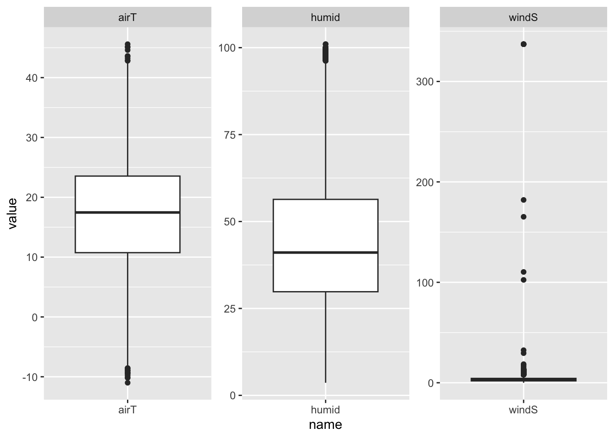

Old
I created this file back in August when I was trying to figure out what we were doing and what data was out there. Specifically, we were trying to see if there were any available models for occupancy, for which we could use their results as a starting point to generate predictions.
NABat grids for Montana
I downloaded the Montana Specific grids from the link
All shape files are stored in the ‘datafiles’ folder which is not included on version control (or uploaded to github) due to size (check the .gitignore), but the folder. However, I have listed all links from where information was downloaded.
I am not fully sure about what the Montana GRTS files include, the .xml file should be it. There is a spreadsheet that downloads with the zip (.xls file) which has the spatially balanced and randomized ordered list (.xls) of the 10x10km grid cells for monitoring site selection. However, I can’t tell the difference between the order of the .xls file and the shape files.
From the same site, the variable GRTS_ID shows the sampling priority for the grids, with smaller numbers meaning high priority. We want to focus on the 10 by 10km grids, and I see here that on this shape file, these are divided in 4, so each sub grid is 2.5^{7} squared meters.
The geometry in these files is 4 grids for each 10 by 10 grid. The geometry variable is for each of these subgrids, not the 10by10, so if we visualize right away:

But this map shows the tiny girds, not the 10 by 10 km, so we need to change that.
MT FWP Phase 1 work
Kathi Irvine shared this link to the data release for their Phase 1 work. With this report Unfortunately, I can’t find any code associated to this data and report, so we don’t have the scripts or data to reproduce these results.
What I understand is that this work used data that was opportunistically collected, and so getting state-wide occupancy predictions was tricky. The estimates are also done using data collected from 2008-2010. The output they provide in these shapefiles are the model based predictions for the probability of occurrence for each of the study species, and the associated 95% CI for those predictions.
Summary
Data
Mist netting and acoustic data collected from 13 different bat species. Use observations collected in the summer (Jun-Sep) for years 2008, 2009, 2010. They assume no false positives, and that every detection indicate presence. Analysis focused on 8 species (EPFU, LANO, LACI, MYCA, MYCI, MYEV, MYLU, and MYVO.) They used the geographical coordinates associated with each record location (bat) to associate with NABat grids. Covariates from Montana Natural Heritage Program at 90x90meter resolution, so they averaged within a grid cell. These covariates are: - forest percent cover (log-transformend) - elevation - ruggedness - average degree days For detection probabilities, the covariates used: - detection method (mist netting or acoustic) - date - weather covariates (min temp, daily precipitation)
Model
Probability of occupancy modeled using logit link using the associated coefficients, and the covariates for occupancy mentioned above (forest, elev, rugg, degreedays), for \(i\) sites and \(k\) species.
\[ logit(\psi_{ik}) = \mathbf{X_i} \mathbf{\beta_k} \]
- They also included a hierarchy for each fixed effect, so that for each covariate, the coefficients across the species come from a common normal distribution (‘community-level prior distribution’)
- Spatial autocorrelation by incorporating spatial random effects in the occupancy process. Intrinsic conditionally autoregressive (ICAR) spatial correlation structure.
\[ logit(\psi_{ik}) = \mathbf{X_i} \mathbf{\beta_k} + \mathbf{\eta_k} \]
Load the shapefiles and metadata
We can explore the data we just loaded:
Simple feature collection with 6 features and 49 fields
Geometry type: POLYGON
Dimension: XY
Bounding box: xmin: -1203000 ymin: 2466000 xmax: -623000 ymax: 2486000
Projected CRS: Albers
# A tibble: 6 × 50
CONUS_10KM EPFU_lower LACI_…¹ LANO_…² MYCI_…³ MYEV_…⁴ MYLU_…⁵ MYVO_…⁶ MYCA_l…⁷
<int> <dbl> <dbl> <dbl> <dbl> <dbl> <dbl> <dbl> <dbl>
1 101567 0.640 0.919 0.792 0.625 0.504 0.782 0.461 -9.99e+2
2 101568 0.327 0.852 0.711 0.691 0.269 0.818 0.228 -9.99e+2
3 101569 0.553 0.864 0.792 0.817 0.425 0.811 0.353 -9.99e+2
4 101570 0.483 0.870 0.770 0.791 0.362 0.816 0.287 -9.99e+2
5 101571 0.295 0.857 0.699 0.688 0.220 0.817 0.181 -9.99e+2
6 101977 0.0145 0.0754 0.177 0.0566 0.237 0.487 0.0488 3.02e-3
# … with 41 more variables: EPFU_mean <dbl>, LACI_mean <dbl>, LANO_mean <dbl>,
# MYCI_mean <dbl>, MYEV_mean <dbl>, MYLU_mean <dbl>, MYVO_mean <dbl>,
# MYCA_mean <dbl>, EPFU_upper <dbl>, LACI_upper <dbl>, LANO_upper <dbl>,
# MYCI_upper <dbl>, MYEV_upper <dbl>, MYLU_upper <dbl>, MYVO_upper <dbl>,
# MYCA_upper <dbl>, EPFU_width <dbl>, LACI_width <dbl>, LANO_width <dbl>,
# MYCI_width <dbl>, MYEV_width <dbl>, MYLU_width <dbl>, MYVO_width <dbl>,
# MYCA_width <dbl>, J1_lower <dbl>, J2_lower <dbl>, J3_lower <dbl>, …Some of the variables explained:
- CONUS_10KM: NABat grid cell ID for cells in the state of Montana
- The variables with ’_lower’ correspond to the lower bound of the posterior 95% interval for occurrence for different bat species
- Similarly, ’_mean’ is the posterior mean occurrence probability
- ’_upper’ is the upper bound
- ’_width’ is the 95% posterior interval width for probability of occurrence
- J1-J4 are different groups of bats:
- J1 - all eight species occurence
- J2 - EPFU and all myotis
- J3 - EPFU and MYLU
- J4 - all myotis
We also have a geometry list column here, so we can plot the Montana grids using this object.
We can visualize different species by changing the fill argument to the different variables. In this case, we look at the mean probability of occupancy and 95% CI width for MYLU.
One of their results is that MYLU has high predicted occupancy probabilities across the state, with no clear or strong patterns.
The shared resources for this Phase 1 did not include data or scripts, just the maps for the predictions
Phase 2 work
All of the phase2 work came from Kathi in a zipfolder, and I didn’t find anything related to this work online.
Summary
Phase 2 focused on analyzing acoustic data to model bat activity, and to avoid misidentification, they focused on overall bat activity (total number of bat calls). I think this work also used data from detectors placed for specific projects, and so not a probabilistic sampling design of Montana. Data from April to October since that’s when the bats are most active, and at least 15 nights for a detector.
Model
The number of bat calls in a night modeled as a Poisson variable (\(y_i\), where \(i\) is one night at a specific detector), so use a generalized linear model to describe this and associated covariates. They model here detector years (\(j\)), which I don’t fully understand. The report mentions it groups observations if they were collected at the same detector during the same year. Anyways, the glm goes as follows
\[ \text{bat calls per night - } y_i \sim Poisson(\lambda_i) \] log link to associate the mean (\(\lambda\)) parameter,
\[ \log(\lambda_i) = \mathbf{x}_i\mathbf{\alpha}_{j[i]} + \mathbf{w}_i\mathbf{\beta}_{j[i]}+\epsilon_i \] where the first part is for the weather covariates (air temp, wind speed, humidity, plus the intercept so \(\alpha\) length is 4), the second is for a trend over time (using thin plate regression splines, is this a gam?), and the third for the error term for each night. The second part for the trend, \(w\) is a spline design matrix for julian date (this matrix has 10 columns, and thus length of \(\beta\) is 10). Coefficients (\(\alpha \text{ and } \beta\)) could vary across detector years (or just years? why use detector years?). They also model each batch of coefficients (each batch is a year) with normal distributions. To include variation, they use a hierarchical framework and have the coefficients follow normal distributions: \[ \alpha_{jk} \sim \mathit{Normal}(\mu_{\alpha k}, \sigma_{\alpha k}^2) \]
Results
The zipfolder had data and scripts, and I was able to run the model to get the results. I have stored those in the same shapefiles directory, but these are not on github due to size. For the \(alpha\) coefficients (\(\alpha_{jk} \sim \mathit{Normal}(\mu_{\alpha k}, \sigma_{\alpha k}^2)\)) overall intercept it 3, and posterior mean for \(\sigma\) is 2.25, air temp has positive relationship with nightly number of calls. Humidity and wind speed with negative relationship. Figure 3 in the report shows more details, which I reproduced below.
Shared data
I ran this model using the code provided by Kathi, but it is not on Github because of size.
Quick look at the data
These plots show the number of observations (total nights) for each of these sites, and the three habitat covariates they had available.

These are the nightly covariates they used in the model, and the ones associated to the alpha coefficients. They didn’t use the environmental covariates because there was not enough variation in those.

These are the parameters for the normal distributions that describe the coefficients for all the covariates. After running the model, I used the available code to reproduce the figure shown in the report.
Phase 3 work
Summary
This part of the work focuses on evaluating sampling effort and design, it is a power analysis. What is relevant to us, is that they simulate data for bat occupancy in Montana using the coefficients from Phase 1. I only got the report associated to this work, but no data or scripts. This report cites the data release and the report mentioned in Phase 1 to inform the detection and occupancy parameters in all their simulations.
They mention here a package: DynOccuPow by Banner et al 2019 to generate occupancy datasets but I haven’t had a chance to explore it.
Single-season model
To simulate these, it is straightforward using the covariates mentioned in Phase 1, although we don’t have the data for those covariates. So a site \(i\) is either occupied or not with probability \(\psi_i\) following: \[ Z_i \sim \text{Bernoulli}(\psi_i) \]
and, \[ \text{logit}(\psi_i) = \beta_0 + \beta_1\log \text{_Forest}_i + \beta_2\text{Ruggedness}_i + \beta_3\text{Elevation}_i + \beta_4\text{DegreeDays}_i \] In the report they mention that for MYLU, these coefficients are: \(\beta_0 = 2, \beta_1 = 0, \beta_2 = -0.25, \beta_3 = 1, \beta_4 = 2\) and a constant detection probability of 0.378 and generated for visits \(j = 1, ..., J\): \[ [Y_{ij}|Z_i=1]\sim\text{Bernoulli}(p_{ij}) \] with \(logit(p_{ij}) = \alpha_0\) and \(\alpha_0 = -0.5\)
Multi-season model
simulated data for \(t = 1,2,3\) years, and data for the first year was simulated following the single-season model described above.For subsequent years, occupancy was generated based on colonization and survival rates given the occupancy of the previous year. So, occupancy states \(Z_{i,t}\) for \(t=2,3\) are \(\text{Bernoulli}(\psi_{i,t})\) with:
\[ \psi_{i,t} = z_{i,t-1}\phi_{t-1} + (1- z_{i,t-1})\gamma_{t-1} \] which means cells that were occupied in the previous year remain occupied with probability \(\phi\) and cells that were empty the previous year get occupied with probabilty \(\gamma\). Values used here: \(\gamma = 0.1\) representing low colonization rate, and used values of \(\phi_1 = 0.9\) and declines with \(\phi_2 = 0.9 \times d\) with \(d = (0.975, 0.95, 0.9)\) to simulate occupancy declines in 15, 20, and 25%. For detections, they used \(\alpha_0 = -0.8\) which gave a detection probability of 0.310, constant.
Activity model
This one uses the model and coefficients from Phase 2 and generates data.
Overall
This workis mostly to guide sampling in the future. We could follow the way they have generated the data, but I don’t think we have any of the covariates data they used in Phase 1.
NABat Status and trends from 2010-2019
Found this status and trends page from 2010-2019: https://www.sciencebase.gov/catalog/item/620e6f3bd34e6c7e83baa603 There’s a bunch of links, so posting them all here - This is the NABat status and trends page: https://sciencebase.usgs.gov/nabat/#/results - The data release: https://www.sciencebase.gov/catalog/item/620e6f3bd34e6c7e83baa603 -This data release has the NABat associated covariates - The report associated to it: https://ecos.fws.gov/ServCat/Reference/Profile/144755 OR https://ecos.fws.gov/ServCat/DownloadFile/216681 - This is from the NABat page: https://www.nabatmonitoring.org/post/summer-occupancy-analysis-2010-2019
Map
The map and covariates are available for the whole continental US. I am just restricting to Montana here:
Covariates
Available covariates, and the ones that were used in the ecological model described in the report:
From the same page, we have predictions for mylu occupancy
Focusing on Montana
Joining, by = "grts"
Other predictions
Then, I found summertime predictions
MYLU specific predictions
https://www.sciencebase.gov/catalog/item/6046ab46d34eb120311a44ba saved as the ‘rangewidesummer’ zip download and sent to datafiles folder. There is a .xml file for metadata, just hard to read it and don’t know how else to open. Just getting info from when I open in the browser. It says this is from the NABat acoustic database. The missing rows of data show up as empty in the map, not sure what these are in the first place. This is shapefiles, and there is no report associated, but there are several covariates for each cell: distance from wind farms, forest cover, water cover, elevation, ruggedness, precipitation, temperature.